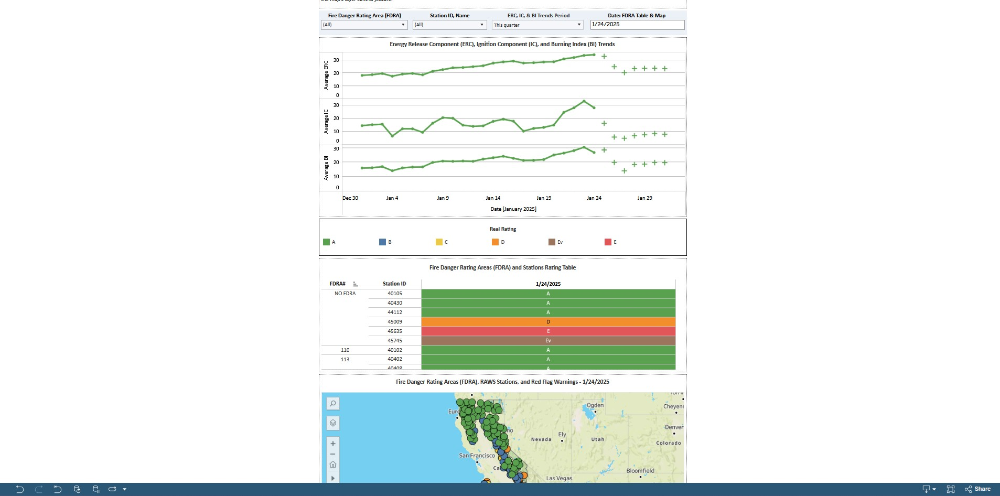

LLaVAGraph is an agentic framework designed to explore applications of multi-modal LLMs and
other artificial intelligence techniques in industrial manufacturing.
Implemented using Huggingface Transformers, Pytorch, LLaVA v1.5, and Llama 3.2 on MTSU's High
Performance Computing cluster.
Human-Centered Dashboard Design for an Individualized Driving Simulator
(August 2023 - February 2024)
This dashboard was designed for a study conducted by the Vanderbilt Robotics and Autonomous System
Laboratory, allowing visualization of different driving data collected by their in-house driving
simulator.
Implemented using Python, Pandas, and Plotly Dash.
Improving Augmented Reality Pose Redirection Using Potential Functions and Gradient
Descent
(March 2024 - May 2024)
Pose redirection is a significant problem with augmented reality avatars; my project studied ways to
optimize the pose mimicry process using machine learning.
Implemented using C#, Unity, and Microsoft Mixed Reality Toolkit. Deployed on the Hololens 2.
Weather Database Dashboard Project
(August 2023 - December 2023)
In this project, we created a full-stack weather data storage app supporting graphing, mapping, and
spatial queries.
Implemented using Oracle MySQL, Python, and Flask.

Project Activity Level (PAL) and Industrial Fire Precaution Activity Level (IFPAL) -
California Dashboard
(June 2023 - August 2023)
Main developer for both PAL dashboard and data collection backend.
Implemented using Tableau, Python, and Pandas.
Sign Invertibility for Graphs - Mathematics Research
(January 2022 - May 2023)
Researched new applications of sign invertibility for various families of graphs.